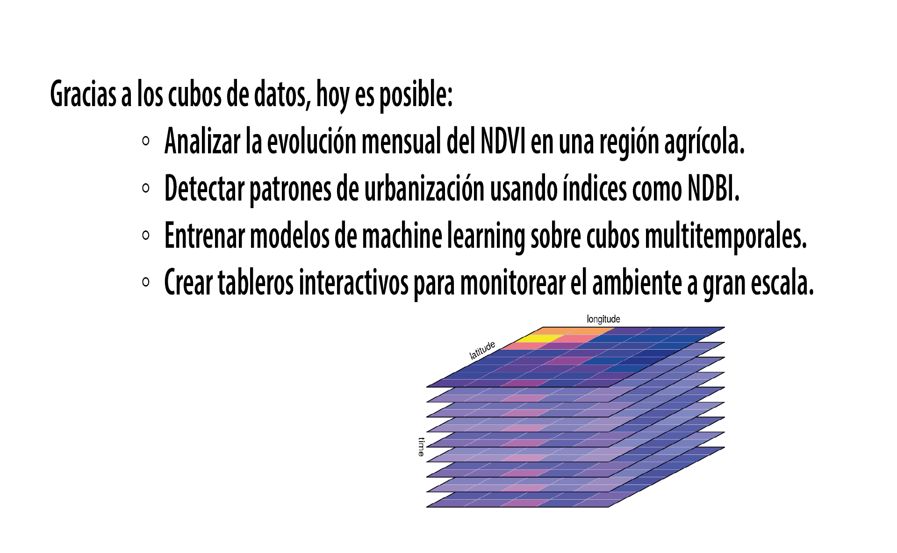

7. Capítulo 7 · Cubos de Imágenes Satelitales#
7.1. Introducción#
üé¨ ¡Seguimos explorando las Series Temporales aplicadas a la Informaci√≥n Geoespacial! üåçüìä En este nuevo episodio, damos un paso más: introducimos los cubos de datos üßäüõ∞Ô∏è como estructura clave para organizar, analizar y visualizar imágenes satelitales a lo largo del tiempo.
üöÄ A partir de la misi√≥n Sentinel-3 de la Agencia Espacial Europea, repasamos conceptos esenciales como bandas espectrales, √≠ndices y, sobre todo, definimos qu√© es un cubo de datos geoespaciales, cuáles son sus dimensiones (espacio, tiempo, espectro, categor√≠as) y por qu√© resultan fundamentales para el análisis ambiental y territorial.
üí° Para ilustrar su utilidad, presentamos tres casos prácticos donde aplicamos cubos de datos a variables reales:
üî∑ Ejemplo 1: Cubo de temperatura superficial MODIS üå°Ô∏è Creamos un cubo de datos mensual para Bah√≠a Blanca con imágenes MODIS (2024-2025). Calculamos promedios mensuales, generamos una serie temporal y exportamos los resultados en CSV para analizarlos en Colab. Detectamos tendencias, estacionalidad y anomal√≠as t√©rmicas ‚Äîcomo la registrada en marzo de 2025. üìì Notebook: Lab_007_ST_BahiaBlanca.ipynb
üî∑ Ejemplo 2: Cubo de precipitaci√≥n con CHIRPS üåßÔ∏èüìâ Construimos un cubo de datos de precipitaci√≥n mensual para la misma regi√≥n, utilizando la colecci√≥n CHIRPS. Visualizamos capas en el mapa, graficamos valores mensuales y detectamos eventos extremos, como lluvias an√≥malas en marzo de 2025. Gráficos y tablas complementan el análisis en consola.
üî∑ Ejemplo 3: Cubo de clasificaci√≥n de suelo con Sentinel-2 y Random Forest üåæüèôÔ∏è Generamos un cubo categ√≥rico bimestral de tipos de suelo (agua, urbano, cultivos, etc.) para 2024. A partir de imágenes Sentinel-2 y un modelo Random Forest, construimos una serie temporal clasificada y mostramos su evoluci√≥n en gráficos apilados. Incluimos m√©tricas de validaci√≥n, porcentajes y recuentos por clase para interpretar cambios en el paisaje, como expansi√≥n urbana o variaci√≥n en áreas verdes.
7.2. De imágenes satelitales a Cubos de Imágenes#
Al observar una imagen tomada desde un satélite, es tentador pensar que estamos viendo una simple foto de la Tierra como si fuera una fotografía aérea en alta resolución, pero eso sería una visión limitada, sería reducirla a lo que nuestros ojos alcanzan a ver, cuando en realidad hay mucho más que eso.

En verdad, lo que capturan los satélites no es una simple imagen como una fotografía convencional, sino un conjunto de bandas espectrales, cada una correspondiente a una distinta longitud de onda del espectro electromagnético
Estas bandas, combinadas, forman una representación detallada y multidimensional de lo que ocurre en la superficie terrestre. Pero la información no termina acá, las bandas pueden ser utilizadas individualmente o combinadas mediante índices espectrales, que son fórmulas matemáticas diseñadas para resaltar ciertos fenómenos, como la vegetación, el agua, los suelos y las áreas urbanas, en función de su comportamiento espectral.
El catálogo awesome spectral indecis, reúne más de 250 de estos índices organizados por dominio de aplicación, lo que lo convierte en una herramienta clave para interpretar y extraer información significativa de las imágenes satelitales. El cumulo de cientos de índices de este catálogo puede ser accedido desde distintos paquetes en lenguajes d eprogramacion como javascript, Python, R y julia.
Un excelente ejemplo de esta riqueza espectral es la misión Sentinel-2, operada por la Agencia Espacial Europea. Esta misión no toma simplemente una foto del planeta, sino que registra 13 bandas espectrales distintas, distribuidas en diferentes partes del espectro electromagnético y con distintas resoluciones espaciales 10, 20 y 60 metros, cada una con un propósito específico.
Estas bandas incluyen banda 1 aerosol captura información en la región del violeta, útil para la corrección atmosférica y detección de aerosoles, resolución 60 metros,
banda 2 azul, banda 3 verde y banda 4 rojo, bandas visibles al ojo humano que permiten generar imágenes en color natural, resolución 10 metros,
banda 5, 6 y 7, conocidas como red edge, estas bandas cubren la transición entre el rojo y el infrarrojo cercano, son fundamentales para estudios avanzados de vegetación y agricultura de precisión, resolución 20 metros,
banda 8 y banda 8a, bandas en el infrarrojo cercano, claves para evaluar la salud de la vegetación, calcular índices como el NDVI y detectar cambios en la biomasa, resolución 10 metros, banda 8 y 20 metros en banda 8a,
banda 9, vapor de agua, útil para corregir efectos atmosféricos asociados al vapor de agua, resolución 60 metros,
banda 10, cirrus, diseñada específicamente para la detección de nubes cirrus que pueden interferir en el análisis de otras bandas, resolución 60 metros,
banda 11 y banda 12, SWIR 1 y SWIR 2, bandas en el infrarrojo de onda corta, útiles para analizar contenido de humedad del suelo, nieve, hielo o detectar áreas afectadas por incendios, resolución 20 metros,
Cada una de estas bandas aporta una capa distinta de información. Y al combinar esta riqueza espectral con series temporales, índices matemáticos e inteligencia artificial, podemos transformar simples imágenes en verdaderos análisis dinámicos del territorio.
Entonces, lo que vemos como una imagen, en realidad, es una colección multidimensional de datos espectrales. Cada píxel tiene múltiples valores asociados, uno por cada banda, revelando propiedades biofísicas que no podríamos captar con nuestros sentidos. Es como si viéramos el mundo con “ojos científicos”.
Y esto ocurre para cada punto de la Tierra observado por la misión. Pero además, estos puntos no se observan una única vez
7.3. Revisitando la Tierra: frecuencia y volumen de datos en Sentinel 2#
Sentinel 2 no solo es poderosa por la cantidad de bandas que captura… Lo verdaderamente extraordinario es su capacidad para volver a mirar, una y otra vez, el mismo lugar del planeta con una frecuencia difícil de igualar. Durante años, esta misión estuvo compuesta por dos satélites gemelos: Sentinel 2A y Sentinel 2B, operando en la misma órbita para cubrir la superficie terrestre con alta frecuencia. Pero en septiembre de 2024 se produjo un hito importante: el lanzamiento de Sentinel 2C, desde la Guayana Francesa a bordo del último cohete Vega de la Agencia Espacial Europea. Aunque Sentinel 2C fue diseñado como satélite de reemplazo, durante una etapa transitoria en 2025, los tres satélites estuvieron operativos de forma simultánea, lo que llevó la frecuencia de revisita a niveles inéditos. En ciertas regiones, ahora es posible observar un mismo punto del territorio con apenas uno o dos días de diferencia entre capturas. Y eso, para quienes trabajamos con análisis multitemporal, es una oportunidad invaluable. Este ritmo sostenido de adquisición nos permite construir series temporales detalladas: ver cómo se expande una ciudad, cómo reverdece un bosque tras un incendio, cómo evoluciona un cultivo o cómo fluctúan los cuerpos de agua. Pero claro… semejante constancia tiene un precio. No económico, sino informativo. La constancia genera volumen. Mucho volumen. Cada satélite Sentinel 2 recolecta y transmite más de 1.5 terabytes de datos por día, por lo que la constelación —en esta fase de tres satélites activos— puede generar más de 4.5 terabytes diarios. A lo largo del año, esto representa más de 1.6 petabytes de nuevas imágenes satelitales. Hasta mediados de 2025, el archivo acumulado de la misión supera los 30 petabytes. Un océano de información geoespacial, que incluye productos de nivel 1C (ortorrectificados, en top-of-atmosphere) y nivel 2A (corregidos atmosféricamente, en bottom-of-atmosphere). Y lo mejor de todo es que esta información no está bajo llave.
La Agencia Espacial Europea, a través del programa Copernicus, ha impulsado una política de ciencia abierta sin precedentes. Los datos de Sentinel 2 están disponibles para todo el mundo en repositorios como el Copernicus Data Space Ecosystem o el CEDA del Reino Unido, que ya superan los 34 petabytes de información de Observación de la Tierra, creciendo cada día en varios terabytes. Este compromiso con la transparencia, el acceso libre y el desarrollo global de capacidades analíticas nos plantea un desafío apasionante: Con tanto conocimiento disponible desde el espacio. ¿Estamos preparados para sacarle el máximo provecho? ¿Cómo organizamos toda esta información?
¡Bienvenidos al mundo de los cubos de datos, o datacubes!
El volumen y la complejidad de los datos satelitales nos obliga a pensar de una forma nueva. ¿Cómo podemos analizar millones de imágenes, cada una con múltiples bandas y fechas distintas, sin ahogarnos en un mar de archivos? Aquí entra en juego un concepto clave en el análisis geoespacial moderno: el cubo de dato o inglés datacube dádaciubs
Según la plataforma abierta para la observación de la Tierra openEO: “Un cubo de datos es una estructura de datos multidimensional que organiza la información, generalmente geoespacial, en ejes bien definidos como espacio, tiempo, bandas espectrales, etc.”
Y según Giuliani et al. (2016): “Es una colección de datos geoespaciales organizados como una matriz multidimensional regular, diseñada para facilitar el acceso, consulta y análisis en tiempo real de grandes volúmenes de información.” En otras palabras, un cubo de datos no es solo un almacenamiento de imágenes, sino una forma ordenada e inteligente de organizarlas para que podamos filtrar, combinar, analizar y visualizar los datos de manera eficiente.
¿Y cuáles son sus dimensiones? Las principales son:
Espacio: definido por las coordenadas x e y, donde x representa la longitud (el eje horizontal, de oeste a este) y y representa la latitud (el eje vertical, de sur a norte). Estas dos dimensiones permiten ubicar cada píxel en la superficie terrestre.
Tiempo: corresponde al momento en que fue adquirida cada imagen, ya sea una fecha o una hora específica. Esta dimensión es clave para el análisis de cambios en el territorio.
Espectro: se refiere a las bandas espectrales que capturan diferentes rangos del espectro electromagnético, como el visible, el infrarrojo cercano o el SWIR, lo que permite observar fenómenos que no son visibles a simple vista.
Y, en algunos casos, también la geometría o incluso el sistema de referencia espacial (CRS) como una dimensión adicional.
Esto nos permite hacer operaciones sofisticadas sin necesidad de reestructurar los datos. Por ejemplo:
Filtrar el cubo por fechas, bandas o región.
Aplicar funciones matemáticas sobre cada píxel o grupo de píxeles.
Calcular promedios temporales, máximos espectrales, o derivar índices como NDVI o NDBI.
Remuestrear los datos a resoluciones espaciales o temporales diferentes.
Y realizar agregaciones estadísticas por regiones geográficas, como cuencas, provincias o áreas de cultivo.
Un cubo de datos puede ser raster, cuando trabaja con pixeles organizados en grillas, o vectorial, cuando se organiza por geometrías como polígonos o puntos.
7.4. Aplicaciones reales y cierre#
Gracias a los cubos de datos, hoy es posible:
Analizar la evolución mensual del NDVI en una región agrícola.
Detectar patrones de urbanización usando índices como NDBI.
Entrenar modelos de machine learning sobre cubos multitemporales.
Crear tableros interactivos para monitorear el ambiente a gran escala.

En definitiva, los cubos de datos no son solo una forma eficiente de almacenar información, sino una herramienta poderosa para transformar datos satelitales en conocimiento accionable. Comprender cómo se estructuran, cómo se consultan y cómo se transforman es clave para aprovechar todo el potencial de los datos de observación de la Tierra.
7.5. Datacube de temperatura superficial en Bahía Blanca con GEE#
En este laboratorio vamos a construir y analizar un datacube de temperatura superficial terrestre (LST) para la región de Bahía Blanca, usando imágenes satelitales MODIS desde Google Earth Engine. Veremos cómo generar mapas mensuales de temperatura, cómo calcular promedios sobre toda el área y cómo exportar esta información para estudios más avanzados. Lo más importante: vamos a entender cómo este proceso representa un claro ejemplo del uso de cubo de datos geoespacial.
7.5.1. Paso 1: Definir la región de interés#
var admin2 = ee.FeatureCollection("FAO/GAUL/2015/level2")
.filter(ee.Filter.eq('ADM0_NAME', 'Argentina'))
.filter(ee.Filter.eq('ADM1_NAME', 'Buenos Aires'));
var bahiaBlanca = admin2.filter(ee.Filter.eq('ADM2_NAME', 'Bahia Blanca'));
var roi2 = bahiaBlanca.geometry().simplify(100);
Comenzamos seleccionando la región administrativa de Bahía Blanca desde el catálogo GAUL de la FAO. El resultado es un polígono que define el recorte espacial de nuestro cubo de datos.
7.5.2. Paso 2: Selección temporal#
var fechaInicio = ee.Date('2024-01-01');
var fechaFin = ee.Date('2025-08-01');
Aquí definimos el recorte temporal del datacube. Estamos solicitando 20 meses consecutivos de datos, desde enero de 2024 hasta agosto de 2025.
7.5.3. Paso 3: Cargar MODIS LST y convertir unidades#
var modisLST = ee.ImageCollection("MODIS/061/MOD11A2")
.filterBounds(roi2)
.filterDate(fechaInicio, fechaFin)
.map(function(img) {
var lst = img.select('LST_Day_1km')
.multiply(0.02)
.subtract(273.15)
.rename('LST')
.clip(roi2);
return lst.copyProperties(img, img.propertyNames());
});
El satélite MODIS entrega datos de temperatura superficial terrestre (LST) cada 8 días.
Este bloque:
Filtra imágenes dentro del ROI y del rango temporal.
Convierte los valores de Kelvin a Celsius.
Recorta cada imagen al área de Bahía Blanca.
Lo que estamos construyendo es un cubo de datos con tres dimensiones:
X e Y: espacio (píxeles)
T: tiempo (una imagen promedio por mes)
7.5.4. Paso 4: Parámetros visuales para el mapa#
var visParams = {
min: 10,
max: 45,
palette: ['blue', 'cyan', 'green', 'yellow', 'orange', 'red']
};
Configuramos una paleta de colores que irá de azul a rojo, resaltando las diferencias térmicas. Este rango se adapta a temperaturas comunes en superficie terrestre.
7.5.5. Paso 5 y 6: Generar imágenes mensuales y mostrarlas en el mapa#
var meses = ee.List.sequence(0, fechaFin.difference(fechaInicio, 'month').subtract(1));
var fechasStr = meses.map(function(m){
return fechaInicio.advance(m, 'month').format('YYYY-MM');
});
Esta lista representa la dimensión temporal del cubo. Luego:
fechasStr.evaluate(function(listaFechas){
listaFechas.forEach(function(fechaStr){
var start = ee.Date.parse('YYYY-MM', fechaStr);
var end = start.advance(1, 'month');
var img = modisLST.filterDate(start, end).mean();
Map.addLayer(img.clip(roi2), visParams, 'LST ' + fechaStr);
});
});
Calculamos y mostramos una imagen mensual promedio para cada mes del período. Estas imágenes conforman la dimensión espacial + temporal del cubo de temperatura.
7.5.6. Paso 7: Crear tabla de promedios mensuales (reducción espacial)#
var tablaMensual = ee.FeatureCollection(meses.map(function(m){
var inicioMes = fechaInicio.advance(m, 'month');
var finMes = inicioMes.advance(1, 'month');
var media = modisLST
.filterDate(inicioMes, finMes)
.mean()
.reduceRegion({
reducer: ee.Reducer.mean(),
geometry: roi2,
scale: 1000,
maxPixels: 1e9
}).get('LST');
return ee.Feature(null, {
fecha: inicioMes.format('YYYY-MM'),
temperatura_celsius: media
});
}));
Aquí aplicamos una reducción espacial sobre cada mes. Para cada imagen mensual, calculamos el promedio de temperatura sobre todo el polígono de Bahía Blanca. El resultado es una tabla de 20 filas, cada una representando un mes.
Ejemplo:
Feature 14 fecha: 2025-03 temperatura_celsius: 19.49
Este valor corresponde al promedio de temperatura superficial en marzo de 2025, cuando se registraron eventos de inundación en la región. Esta cifra es útil para estudiar el comportamiento térmico durante ese evento extremo.
7.5.7. Paso 8: Visualizar la serie de tiempo#
var chart = ui.Chart.feature.byFeature(tablaMensual, 'fecha', 'temperatura_celsius')
.setChartType('LineChart')
.setOptions({
title: 'Temperatura superficial promedio mensual - Bahía Blanca',
hAxis: { title: 'Mes' },
vAxis: { title: '°C' },
lineWidth: 2,
pointSize: 4,
colors: ['red']
});
print('Serie mensual de LST:', tablaMensual);
print(chart);
En consola se imprimen dos elementos:
Una tabla con los valores mensuales.
Un gráfico de líneas que permite visualizar tendencias, oscilaciones térmicas y meses extremos.
7.5.8. Paso 9: Estética del mapa#
Map.centerObject(roi2, 8);
Map.setOptions('SATELLITE');
Map.addLayer(bahiaBlanca.style({
color: 'black',
fillColor: '00000000',
width: 2
}), {}, 'Límite Bahía Blanca');
Agregamos una capa de contorno para la región, usando un estilo transparente y bordes negros, para que los mapas mensuales se vean claramente.
7.5.9. Paso 10: Exportar la serie al Drive#
Export.table.toDrive({
collection: tablaMensual,
description: 'serie_LST_BahiaBlanca',
fileFormat: 'CSV'
});
Finalmente, exportamos los datos mensuales de temperatura como un archivo .CSV. Este archivo será utilizado luego en Python, para aplicar modelos de análisis de tendencia y estacionalidad, completando así el ciclo de análisis del datacube.
7.6. Conclusión de esta sección#
En resumen:
Hemos construido un datacube geoespacial tridimensional (X, Y, T) a partir de datos satelitales MODIS.
Derivamos productos de este cubo: mapas mensuales y series temporales.
Extraemos conocimiento para analizar eventos climáticos, como el caso de marzo de 2025.
Este ejemplo muestra cómo GEE permite integrar observación satelital, cálculo estadístico y visualización, con un enfoque moderno y escalable para el análisis de fenómenos ambientales.
7.7. Visualización y análisis de un datacube de precipitación mensual en Bahía Blanca (CHIRPS)#
En este ejercicio analizamos la precipitación mensual en el partido de Bahía Blanca, utilizando la colección satelital CHIRPS Daily en Google Earth Engine. La idea principal es construir un datacube espacio-temporal de precipitación para luego visualizar sus capas mensuales, graficar su evolución a lo largo del tiempo y finalmente exportar sus estadísticas.
7.8. ¿Qué es CHIRPS?#
CHIRPS (Climate Hazards Group InfraRed Precipitation with Station data) es un producto de precipitación global que combina observaciones satelitales infrarrojas con datos de estaciones meteorológicas. Está disponible a resolución diaria desde 1981, con una malla espacial de aproximadamente 5 km. Es muy utilizado para estudios hidrológicos, agrícolas y climáticos en todo el mundo, gracias a su cobertura consistente y su accesibilidad.
¿Cuál es el datacube en este ejemplo?
En este caso, el datacube es una colección tridimensional de datos, estructurado según:
Espacio (x, y): el área geográfica de Bahía Blanca
Tiempo: una capa por cada mes
Variable: precipitación promedio en milímetros
Este cubo de datos nos permite realizar consultas espaciales (¿dónde llovió más en marzo?) y temporales (¿cómo varió la lluvia durante el año?), de forma conjunta.
7.9. Selección de la región: Bahía Blanca#
Utilizamos la colección GAUL de la FAO para recortar el área de interés:
var admin2 = ee.FeatureCollection("FAO/GAUL/2015/level2")
.filter(ee.Filter.eq('ADM0_NAME', 'Argentina'))
.filter(ee.Filter.eq('ADM1_NAME', 'Buenos Aires'));
var bahiaBlanca = admin2.filter(ee.Filter.eq('ADM2_NAME', 'Bahia Blanca'));
var roi2 = bahiaBlanca.geometry().simplify(100); // recorte suave
7.9.1. Definimos el período de análisis#
El estudio abarca desde enero de 2024 hasta agosto de 2025:
var fechaInicio = ee.Date('2024-01-01');
var fechaFin = ee.Date('2025-08-01');
7.9.2. Cargamos la colección CHIRPS diaria#
Filtramos espacial y temporalmente para solo conservar datos sobre nuestra región:
var chirps = ee.ImageCollection('UCSB-CHG/CHIRPS/DAILY')
.filterBounds(roi2)
.filterDate(fechaInicio, fechaFin);
7.9.3. Paleta de colores para visualización#
Configuramos una escala cromática que distingue mejor las zonas con mayor o menor precipitación:
var visParams = {
min: 0,
max: 9,
palette: ['#f7fbff', '#deebf7', '#9ecae1', '#3182bd', '#08519c']
};
7.9.4. Visualizamos cada capa mensual del datacube#
Creamos capas mensuales promediando la precipitación diaria por mes. Cada capa se muestra en el mapa:
var meses = ee.List.sequence(0, fechaFin.difference(fechaInicio, 'month').subtract(1));
var fechasStr = meses.map(function(m){
return fechaInicio.advance(m, 'month').format('YYYY-MM');
});
fechasStr.evaluate(function(listaFechas){
listaFechas.forEach(function(fechaStr){
var start = ee.Date.parse('YYYY-MM', fechaStr);
var end = start.advance(1, 'month');
var img = chirps.filterDate(start, end).mean();
Map.addLayer(img.clip(roi2), visParams, 'CHIRPS ' + fechaStr);
});
});
En el mapa, se agregan capas con nombres como CHIRPS 2024-01, CHIRPS 2025-03, etc. Estas capas muestran con distintos tonos de azul la distribución espacial de la lluvia mensual sobre Bahía Blanca.
7.9.5. Cálculo de la serie temporal mensual promedio#
Calculamos el promedio mensual de precipitación para todo Bahía Blanca, generando una tabla que representa la evolución temporal:
var tablaMensual = ee.FeatureCollection(meses.map(function(m){
var inicioMes = fechaInicio.advance(m, 'month');
var finMes = inicioMes.advance(1, 'month');
var media = chirps
.filterDate(inicioMes, finMes)
.mean()
.reduceRegion({
reducer: ee.Reducer.mean(),
geometry: roi2,
scale: 5500,
maxPixels: 1e9
}).get('precipitation');
return ee.Feature(null, {
fecha: inicioMes.format('YYYY-MM'),
precipitacion_mm: media
});
}));
Esta tabla representa el eje temporal del datacube, sintetizando cada capa mensual en un único valor promedio.
7.9.6. Gráfico de barras de la serie#
Se visualiza en consola una serie temporal que muestra cómo evolucionó la lluvia:
var chart = ui.Chart.feature.byFeature(tablaMensual, 'fecha', 'precipitacion_mm')
.setChartType('ColumnChart')
.setOptions({
title: 'Precipitación mensual promedio - Bahía Blanca',
hAxis: { title: 'Mes' },
vAxis: { title: 'Precipitación (mm)' },
legend: { position: 'none' },
colors: ['#1f78b4']
});
print('Serie mensual:', tablaMensual);
print(chart);
En la consola, el gráfico permite detectar anomalías climáticas o estacionalidades. Por ejemplo, en el mes de marzo de 2025, se registró un valor atípico de 8.27 mm, que puede corresponder a un evento extremo como una DANA (Depresión Aislada en Niveles Altos).
7.10. Ejemplo concreto: Feature 14#
Feature 14
type: Feature
id: 14
geometry: null
properties:
fecha: 2025-03
precipitacion_mm: 8.274471593871292
Este objeto representa la capa del datacube correspondiente a marzo de 2025, donde se registró una precipitación muy por encima del promedio. El valor fue calculado sobre toda el área de Bahía Blanca.
7.10.1. Mejora estética del mapa#
Para facilitar la lectura visual, centramos el mapa, lo mostramos en fondo satelital y destacamos el contorno de Bahía Blanca:
Map.centerObject(roi2, 8);
Map.setOptions('SATELLITE');
Map.addLayer(bahiaBlanca.style({
color: 'black',
fillColor: '00000000',
width: 2
}), {}, 'Límite Bahía Blanca');
7.11. Conclusión de esta sección#
Este ejercicio nos permite construir y visualizar un datacube mensual de precipitación, combinando imágenes diarias CHIRPS. La visualización de cada capa en el mapa junto al gráfico de evolución mensual facilita la detección de anomalías climáticas y proporciona insumos valiosos para análisis posteriores en Python.
7.12. Clasificación de tipos de suelo con Sentinel-2: un enfoque basado en datacubes#
7.12.1. Introducción#
En este laboratorio, vamos a construir un ejemplo claro de datacube aplicado a la clasificación de tipos de suelo. Utilizaremos imágenes Sentinel-2 armonizadas, clasificaremos por Random Forest y generaremos una serie temporal categórica para el año 2024, con énfasis en su interpretación como cubo de datos espacio-temporal. Vamos paso por paso.
7.12.2. Colección de imágenes Sentinel-2 y preparación del mosaico base#
var s2 = ee.ImageCollection("COPERNICUS/S2_SR_HARMONIZED");
var filtered = s2
.filter(ee.Filter.lt('CLOUDY_PIXEL_PERCENTAGE', 30))
.filter(ee.Filter.date('2024-01-01', '2025-01-01'))
.filter(ee.Filter.bounds(roi))
.select('B.*');
var composite = filtered.median().clip(roi);
var rgbVisParams = {
min: 0.0,
max: 3000,
bands: ['B4','B3','B2']
};
Map.addLayer(composite, rgbVisParams, 'roi: región de interés');
Map.centerObject(roi, 10);
Descripción: Aquí preparamos un mosaico RGB de Sentinel-2 a partir de imágenes del año 2024, filtrando por cobertura nubosa y por la región de interés (roi). Este mosaico sirve como base para entrenar el clasificador.
üó∫Ô∏è En el mapa se a√±ade una visualizaci√≥n en color natural de la regi√≥n seleccionada, permitiendo al usuario tener una vista previa del área a clasificar.
7.13. Definición de clases de suelo y preparación de datos de entrenamiento#
var gcps = urbano.merge(agua).merge(cultivos).merge(terrenoDesnudo).merge(bosque);
var gcp = gcps.randomColumn();
var trainingGCP = gcp.filter(ee.Filter.lt('random', 0.6));
var validationGCP = gcp.filter(ee.Filter.gte('random', 0.6));
Descripción: Se definen manualmente cinco clases: agua, urbano, cultivos, bosque y terreno desnudo. Luego se combinan en una colección y se dividen en datos de entrenamiento (60%) y validación (40%) mediante una columna aleatoria.
7.13.1. Entrenamiento del modelo Random Forest#
var training = composite.sampleRegions({
collection: trainingGCP,
properties: ['landcover'],
scale: 10,
tileScale: 16
});
var classifier = ee.Classifier.smileRandomForest(100).train({
features: training,
classProperty: 'landcover',
inputProperties: composite.bandNames()
});
Descripción: Se extraen los valores de las bandas para las regiones de entrenamiento y se entrena un modelo de Random Forest con 100 árboles para clasificar los tipos de suelo.
7.13.2. Clasificación de la imagen y visualización del resultado#
var classified = composite.classify(classifier);
var classVis = {
min: 0,
max: 4,
palette: ['blue', 'gray', 'green', 'violet', 'orange']
};
Map.addLayer(classified.clip(roi), classVis, 'Imagen Clasificada');
Descripción: Se clasifica el mosaico de Sentinel-2 usando el modelo entrenado y se visualiza el mapa resultante. Cada clase se representa con un color distinto.
En el mapa se observa la distribución espacial de las clases de suelo sobre la región de interés.
7.13.3. Evaluación del modelo#
var test = classified.sampleRegions({
collection: validationGCP,
properties: ['landcover'],
scale: 10
});
var testConfusionMatrix = test.errorMatrix('landcover', 'classification');
print('Confusion Matrix', testConfusionMatrix);
print('Test Accuracy', testConfusionMatrix.accuracy());
print('Producers Accuracy:', testConfusionMatrix.producersAccuracy());
print('Consumers Accuracy:', testConfusionMatrix.consumersAccuracy());
print(' Kappa Coefficient: ', testConfusionMatrix.kappa());
print('F-Score:', testConfusionMatrix.fscore(1));
Descripción: Se evalúa la precisión del modelo mediante una matriz de confusión y se imprimen métricas clave: exactitud global, precisión por clase, coeficiente de Kappa y F-score.
Consola: Muestra resultados numéricos que indican cuán bien el modelo ha clasificado las diferentes clases en los datos de validación.
7.13.4. Configuración de la serie temporal#
var frecuencia = "bimestral";
var mesesPorPaso = {
"mensual": 1,
"bimestral": 2,
"trimestral": 3,
"cuatrimestral": 4
};
var paso = mesesPorPaso[frecuencia];
var fechas = ee.List.sequence(0, 12, paso).map(function(mes) {
return ee.Date('2024-01-01').advance(mes, 'month');
});
Descripción: Configuramos la frecuencia temporal de la serie para generar nuestro datacube categórico. En este caso, elegimos una frecuencia bimestral.
7.13.5. Clasificación temporal e interpretación del datacube#
var coleccionClasificada = ee.FeatureCollection(fechas.map(function(fechaInicio) {
// ...
}));
Descripción: Para cada período bimestral, se crea un nuevo mosaico de Sentinel-2, se clasifica y se cuenta la cantidad de píxeles por clase. Esta colección temporal de objetos Feature conforma el núcleo del datacube: cada capa representa un período de tiempo con distribución espacial clasificada.
üßä Datacube: Este es un cubo de datos categ√≥ricos donde:
El eje x es el tiempo (bimestres).
El eje y representa las clases del suelo.
El eje z es la cantidad de píxeles por clase, reflejando área relativa.
Visualización de resultados en consola
print(grafico); // gráfico apilado por clase
print(tablaCantidad); // cantidad de imágenes por período
print(graficoCantidad); // gráfico de cantidad de imágenes
print(graficoPorcentual); // evolución porcentual por clase
Descripción:
Gráfico apilado: muestra cuántos píxeles ocupa cada clase por período, permitiendo detectar cambios como expansión urbana o pérdida de vegetación.
Gráfico de imágenes: señala cuántas imágenes se usaron por período, útil para evaluar calidad del mosaico.
Gráfico porcentual: destaca tendencias proporcionales. Por ejemplo, si el área urbana crece, su porcentaje aumentará aunque el número de píxeles totales también lo haga.
Visualización espacial del datacube Gracias al siguiente bloque:
fechasStr.evaluate(function(listaFechas){
listaFechas.forEach(function(fechaStr){
var fechaInicio = ee.Date.parse('YYYY-MM', fechaStr);
var fechaFin = fechaInicio.advance(paso, 'month');
var imagen = s2
.filterDate(fechaInicio, fechaFin)
.filterBounds(roi)
.filter(ee.Filter.lt('CLOUDY_PIXEL_PERCENTAGE', 30))
.select('B.*')
.median()
.clip(roi);
var clasificada = imagen.classify(classifier);
Map.addLayer(clasificada, classVis, 'Clasificada ' + fechaStr);
});
});
Descripción: Se visualiza en el mapa la imagen clasificada para cada período, completando así el datacube con su representación espacial. Esto permite identificar, por ejemplo, que en marzo de 2024 predomina la clase “Cultivos” o que en mayo crece el parche urbano.
7.13.6. Interpretación específica: ejemplo marzo 2024#
Supongamos que en marzo de 2024 hubo inundaciones. Si vemos en consola el siguiente Feature:
yaml
Copy
Edit
Feature 3
fecha: 2024-03-01
Agua: 120000
Urbano: 85000
Cultivos: 150000
Bosque-Area arbustiva: 30000
Terreno desnudo: 18000
Interpretación: Aquí vemos un aumento inusual en la cantidad de píxeles clasificados como “Agua”, lo que podría reflejar la superficie inundada durante ese mes.
7.13.7. Conclusión#
Este ejemplo nos muestra cómo construir un datacube categórico sobre tipos de suelo usando imágenes Sentinel-2, Random Forest y Google Earth Engine. Integramos series temporales espaciales clasificadas, métricas de validación del modelo, visualizaciones dinámicas y tablas estadísticas. Esta estrategia es ideal para monitoreo de uso del suelo, detección de cambios, gestión ambiental y planificación urbana.
Este es un ejemplo de cómo un cubo de datos no solo organiza información geoespacial, sino que nos permite responder a preguntas relevantes sobre qué tipo de cobertura existe, cuándo cambia y dónde ocurre.
7.14. Ejemplo 2: Serie Temporal de Clases de Suelo con Clasificador Entrenado#
En esta sección vamos a aplicar el clasificador supervisado que entrenamos en capítulo 2 sobre datos Sentinel-2 de la ciudad de Rosario. Nuestro objetivo es generar una serie temporal que nos permita observar cómo evolucionan los distintos tipos de cobertura del suelo a lo largo del tiempo, distinguiendo clases como agua, zonas urbanas, cultivos, vegetación natural y terreno desnudo.
BLOQUE 1: Configuración del período temporal
var frecuencia = "bimestral";
Definimos la frecuencia temporal con la que vamos a construir nuestra serie de tiempo. En este caso elegimos bimestral, lo que implica que cada punto de la serie va a representar un promedio de dos meses.
javascript
CopyEdit
var mesesPorPaso = {
"mensual": 1,
"bimestral": 2,
"trimestral": 3,
"cuatrimestral": 4
};
Creamos un diccionario que traduce cada opción de frecuencia en una cantidad de meses. Esto nos permitirá usar la misma estructura para distintas resoluciones temporales.
var paso = mesesPorPaso[frecuencia];
Extraemos el valor del paso correspondiente a la frecuencia elegida (en este caso 2 meses).
javascript
CopyEdit
var fechas = ee.List.sequence(0, 12, paso).map(function(mes) {
return ee.Date('2024-01-01').advance(mes, 'month');
});
Generamos una lista de fechas que representan los inicios de cada período bimestral, a partir de enero de 2024. Cada valor es un objeto ee.Date.
7.14.1. BLOQUE 2: Definición de etiquetas de clases#
var etiquetas = ee.Dictionary({
'0': 'Agua',
'1': 'Urbano',
'2': 'Cultivos',
'3': 'Bosque-Area arbustiva',
'4': 'Terreno desnudo'
});
Creamos un diccionario que asocia cada código de clase (usado por el clasificador) con un nombre legible. Esto nos permitirá mostrar las clases en gráficos con nombres descriptivos.
7.14.2. BLOQUE 3: Aplicación del clasificador por período#
var coleccionClasificada = ee.FeatureCollection(fechas.map(function(fechaInicio) {
Usamos map() para iterar sobre la lista de fechas y aplicar la misma lógica de clasificación a cada período bimestral.
var fechaFin = ee.Date(fechaInicio).advance(paso, 'month');
Calculamos la fecha final del período sumando el paso (dos meses en este caso) a la fecha de inicio.
var s2 = ee.ImageCollection("COPERNICUS/S2_SR_HARMONIZED")
.filterDate(fechaInicio, fechaFin)
.filterBounds(roi)
.filter(ee.Filter.lt('CLOUDY_PIXEL_PERCENTAGE', 30))
.select('B.*');
Descargamos las imágenes Sentinel-2 del período actual: • Filtramos por fechas, región de interés (roi) y porcentaje de nubes. • Seleccionamos todas las bandas ópticas.
var imagen = s2.median().clip(roi);
Calculamos la mediana de las imágenes en el período y la recortamos al área de estudio.
var clasificada = imagen.classify(classifier);
Aplicamos el clasificador previamente entrenado a la imagen compuesta para generar un raster de clases.
7.14.3. BLOQUE 4: Conteo de píxeles por clase#
var histograma = clasificada.reduceRegion({
reducer: ee.Reducer.frequencyHistogram(),
geometry: ee.FeatureCollection(roi).geometry(),
scale: 30,
maxPixels: 1e13
}).get('classification');
Reducimos la imagen clasificada a una tabla que indica cuántos píxeles hay de cada clase en ese período, usando un histograma.
var dict = ee.Dictionary(histograma);
var keys = dict.keys();
var valores = keys.map(function(k) { return dict.get(k); });
Obtenemos las claves del diccionario (0, 1, etc.) y los valores asociados (cantidad de píxeles).
var nuevasClaves = keys.map(function(k) {
return etiquetas.get(k);
});
Traducimos las claves numéricas por sus nombres: agua, urbano, etc.
var propsEtiquetadas = ee.Dictionary.fromLists(nuevasClaves, valores);
Construimos un nuevo diccionario con claves descriptivas y valores numéricos.
var ft = ee.Feature(null, propsEtiquetadas)
.set('fecha', ee.Date(fechaInicio).format('YYYY-MM-dd'));
return ft;
}));
Creamos un Feature con los datos de ese período y la fecha correspondiente, y lo devolvemos. Al final, coleccionClasificada es una colección de Features, uno por período.
7.14.4. BLOQUE 5: Visualización absoluta#
var grafico = ui.Chart.feature.byFeature({
features: coleccionClasificada,
xProperty: 'fecha'
}).setChartType('ColumnChart').setOptions({
title: 'Serie temporal de clases de suelo - ' + frecuencia,
hAxis: {title: 'Fecha'},
vAxis: {title: 'Cantidad de píxeles'},
isStacked: true
});
Creamos un gráfico de barras apiladas que muestra la cantidad absoluta de píxeles por clase en cada período. Esto permite ver por ejemplo si aumentaron los cultivos o disminuyó el área urbana en un bimestre determinado.
7.14.5. BLOQUE 6: Conversión a porcentajes#
var coleccionPorcentual = coleccionClasificada.map(function(feat) {
Iteramos sobre cada Feature de la colección anterior para convertir los valores absolutos en porcentajes.
var props = feat.toDictionary();
var clases = props.keys().remove('fecha');
Convertimos cada Feature en un diccionario y extraemos las clases (omitimos la fecha).
var total = ee.Number(
clases.map(function(k) {
return ee.Number(props.get(k));
}).reduce(ee.Reducer.sum())
);
Calculamos el total de píxeles clasificados en ese período.
var nuevasProps = ee.Dictionary(
clases.iterate(function(k, acc) {
...
}, ee.Dictionary({}))
);
Para cada clase, calculamos su porcentaje con respecto al total y lo guardamos en un nuevo diccionario.
return ee.Feature(null, nuevasProps)
.set('fecha', props.get('fecha'));
});
Creamos un nuevo Feature para cada período, ahora con porcentajes. coleccionPorcentual es una colección con los datos relativos.
7.14.6. BLOQUE 7: Visualización porcentual#
var graficoPorcentual = ui.Chart.feature.byFeature({
features: coleccionPorcentual,
xProperty: 'fecha'
}).setChartType('LineChart').setOptions({
title: 'Serie temporal porcentual de clases de suelo - ' + frecuencia,
hAxis: {title: 'Fecha'},
vAxis: {
title: 'Porcentaje (%)',
minValue: 0,
maxValue: 100
},
isStacked: false
});
print(graficoPorcentual);
Mostramos un gráfico de líneas con la evolución relativa de cada clase. A diferencia del gráfico anterior, este permite detectar tendencias aunque cambie el número total de píxeles disponibles (por ejemplo, por nubosidad).
7.15. Conclusión#
Con este último código logramos aplicar automáticamente el clasificador de suelos para Rosario a cada período bimestral. A partir de ahí, generamos una serie de tiempo de clases del suelo que nos permite observar tanto los cambios absolutos como los relativos. Este enfoque es ideal para detectar procesos de urbanización, expansión agrícola, deforestación o cambios hidrológicos en el territorio.
7.16. Video del capítulo#
Podes mirar el video asociado a este capítulo en el canal de youtube de IDERA: ttps://www.youtube.com/watch?v=mxV8URF8z9U&t=1538s